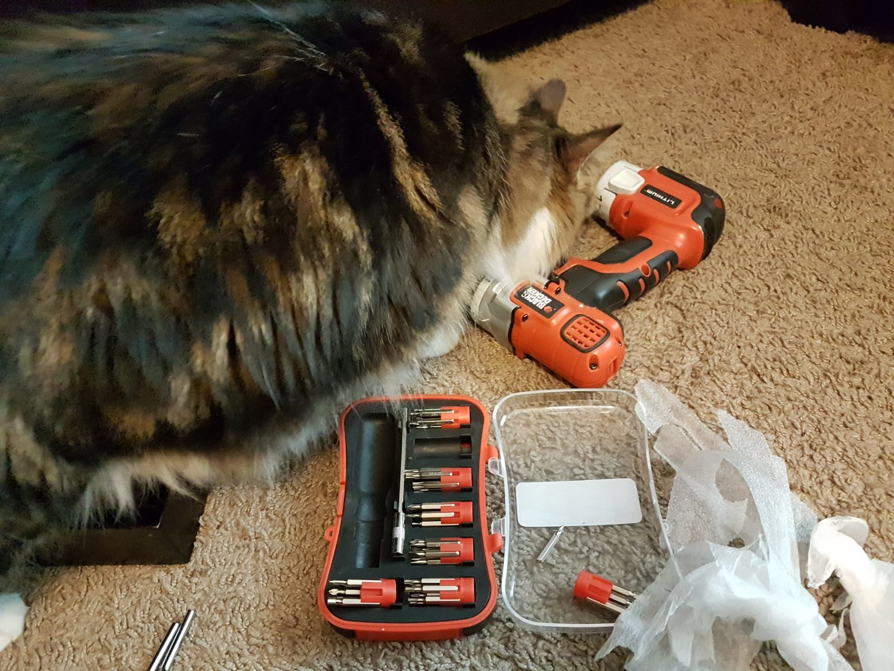
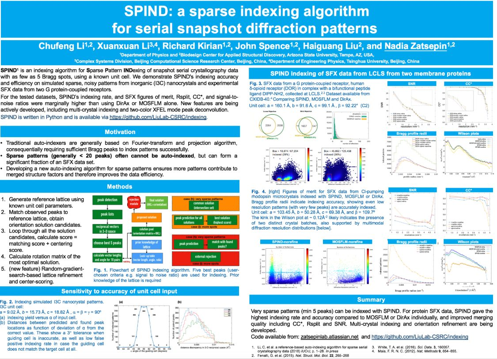
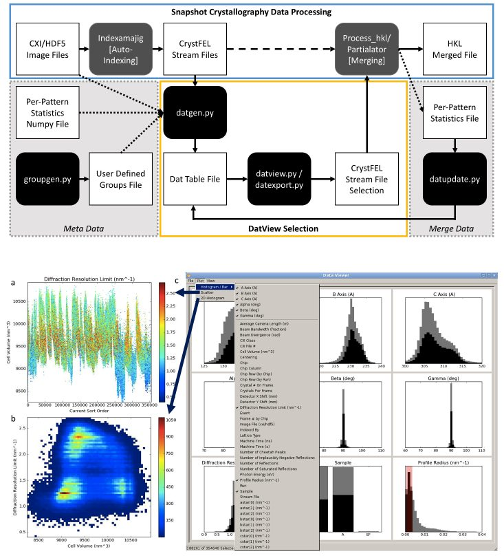

We develop X-ray crystallography technologies at the frontier of what's possible, capturing biochemical reactions in real time, at atomic resolution under physiological conditions. Our goal is to reveal protein structures and dynamics that are inaccessible with conventional approaches, to drive drug discovery, understand fundamental structural biology and advance materials science.
The lab is led by ARC Future Fellow A/Prof Nadia Zatsepin and based in the Department of Physics and Astronomy at Swinburne University of Technology, Melbourne.
Interested in joining the lab?
We offer interdisciplinary research projects at PhD, Masters and undergraduate level. For PhD applicants, we can support applications for RTP or SUPRA scholarships (Swinburne PhD scholarships for high-achieving students) and other scholarship schemes. See Prospective students/postdocs.
Zatsepin Lab Confluence site
(members only)

Resources
Software and other good references

SPIND
program for sparse pattern indexing for serial snapshot crystallography
Lead developer: Chufeng Li

DatView
GUI for visualizing and querying large serial crystallography datasets
Developer: Natasha Stander
Contact
nzatsepin {...} swin.edu.au
Department of Physics and Astronomy
School of Science, Computing and Engineering Technologies
Swinburne University of Technology
Hawthorn Campus
John St, Hawthorn VIC 3122
https://experts.swinburne.edu.au/11120-nadia-zatsepin
Mailing address
Swinburne University of Technology
C/-Department of Physics and Astronomy
PO Box 218, Hawthorn
VIC 3122 Australia
Affiliations
Affiliate faculty, Arizona State University Biodesign Center for Applied Structural Discovery
National Science Foundation's Science and Technology Center for Biology with X-ray free-electron lasers - NSF BioXFEL STC